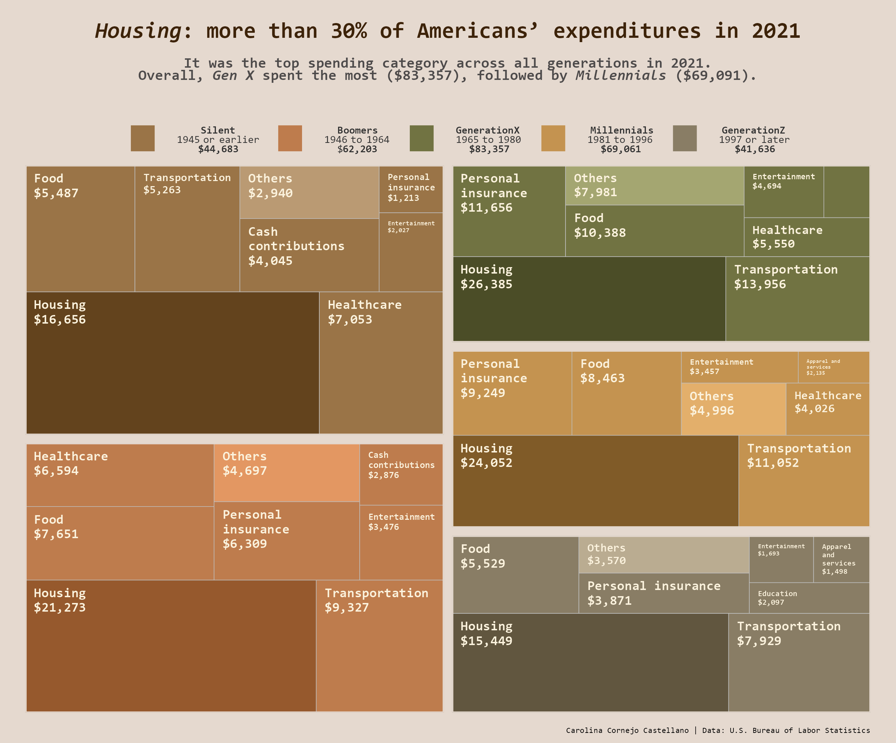

Code
Primarily R. This page is not actively updated, better check my GitHub
1. Data visualization: Replica, enhancements and alternatives to How Americans spend their money bump chart.


An alternative visualization which code can be found here.